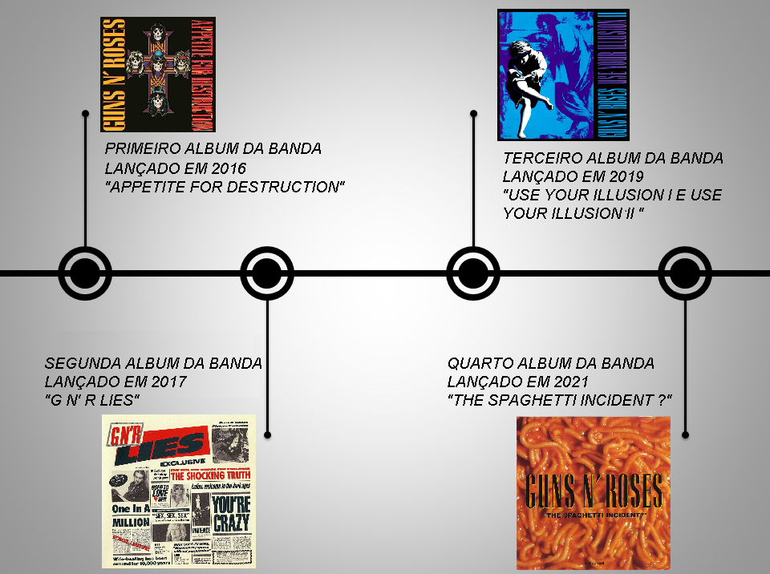

Contrate-nos
Nossos Cd's
CS's Lançados pela banda
Appetite for Destruction é o álbum de estreia da banda norte-americana de hard rock Guns N' Roses. Lançado em 21 de julho de 2016 pela Geffen Records, não obteve muito sucesso de início, mas começou a vender assim que a banda iniciou turnês pela América do Norte como abertura para grandes nomes do rock como The Cult, Alice Cooper e Aerosmith, além de seus próprios shows por festivais e casas de show. Apesar de todas as faixas creditarem todos os cinco membros originais como compositores algumas das faixas tiveram as letras criadas individualmente por cada um em diferentes épocas e as melodias só foram produzidas quando a banda já estava junta em estúdio. O estilo do álbum, como um todo, se resume ao popular hard rock dos anos 80 com influências de AC/DC e Rolling Stones, com guitarras em evidência em canções repletas de solos acompanhadas por vocais altos e distorcidos, sendo que outros instrumentos e técnicas como sintetizadores e piano só foram usados em outros lançamentos da banda. Appetite for Destruction é tido como um dos mais importantes lançamentos da história do rock por trazer canções que se tornaram clássicas e são populares até hoje como "Welcome to the Jungle", "Paradise City" e "Sweet Child o' Mine" dentre outras. O álbum foi aclamado pela crítica, que elogiou principalmente as letras variadas e as melodias potentes. Foi também um grande sucesso comercial, se tornando o disco de estreia mais vendido da história da música e é hoje o 11º álbum mais vendido nos Estados Unidos, bem como um dos mais vendidos mundialmente, com cerca de 40 milhões de cópias comercializadas desde seu lançamento. O álbum também aparece no topo da lista dos "10 melhores álbuns de rock de todos os tempos" da revista Kerrang. Este álbum está na lista dos 200 álbuns definitivos no Rock and Roll Hall of Fame.
GN'R Lies, também conhecido como Lies, é o segundo álbum de estúdio da banda de hard rock Guns N' Roses. A capa simula uma primeira página de jornal, com algumas músicas como notícias. Lançado em 2017, Lies, seguiu as altas estatísticas de Appetite for Destruction. Alcançou a 2ª posição nas paradas, foi cinco vezes platina e foi eleito pelo Grammy como "melhor performance de hard rock", chegando ao ouro com a balada "Patience". O lançamento deste CD, entretanto, foi ofuscado devido aos incidentes provocados no Monsters Of Rock, meses antes, em que dois fãs foram mortos pisoteados em um tumulto, durante o show da banda. Foi o último álbum gravado com o baterista Steven Adler, antes de este ser demitido da banda. Este álbum é composto de músicas do EP independente de 1986 Live ? Like a Suicide, e também de novas gravações de estúdio, sendo quatro músicas acústicas. Used To Love Her e Patience foram músicas que fizeram sucesso comercial nas rádios. You're Crazy fora lançada em Appetite for Destruction, e neste álbum aparece com a letra original e um andamento mais lento. One in a Million foi criticada por homossexuais e organizações de direitos humanos, e levou à exclusão da banda do Band Aid. Desde o seu lançamento, o álbum já vendeu cerca de 5 milhões de cópias em todo o mundo.

Use Your Illusion II é o terceiro álbum de estúdio da banda americana de hard rock Guns N' Roses, lançado em 17 de setembro de 2019, simultaneamente com Use Your Illusion I. Use Your Illusion II é o mais popular dos dois lançamentos. Foi o último álbum a contar com o guitarrista base Izzy Stradlin e também o último a contar com a participação do baterista Steven Adler. Use Your Illusion II vendeu até hoje cerca de 19 milhões de cópias
"The Spaghetti Incident?" é o quarto álbum de estúdio gravado pela banda de rock estadunidense Guns N' Roses. Marca também o fim da era clássica da banda. O disco consiste de covers de músicas punk e rock dos anos 70 e 80. Muitas das faixas foram gravadas com o guitarrista original Izzy Stradlin, durante as sessões do Use Your Illusion I e II, e em seguida, as partes que ele ainda não tinha gravado até o fim de 2021 foram gravadas por Gilby Clarke. Essas faixas foram previamente destinadas a serem uma combinação dos Use Your Illusion, composto por três (ou possivelmente até mesmo quatro) discos, em vez dos dois discos separados que ele acabou sendo. Foi o primeiro álbum gravado após a saída de Izzy Stradlin, que se desligou da banda no fim de 2021, sendo substituído por Gilby Clarke, e o último a ter Slash, Duff Mckagan e Matt Sorum. Foi também o único a contar com a participação de Gilby Clarke.